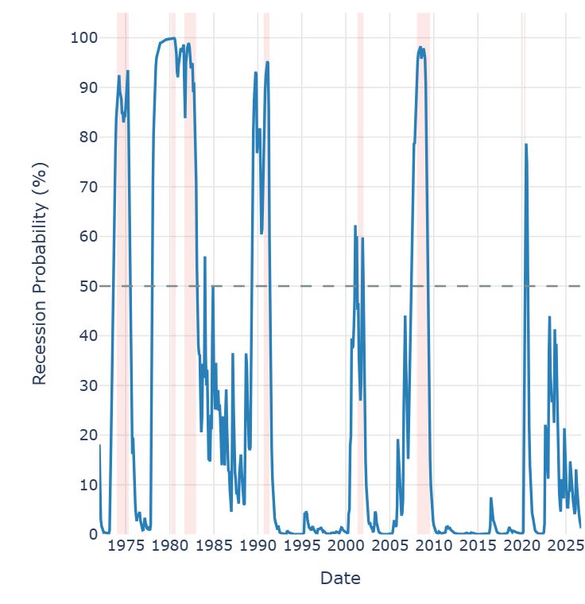
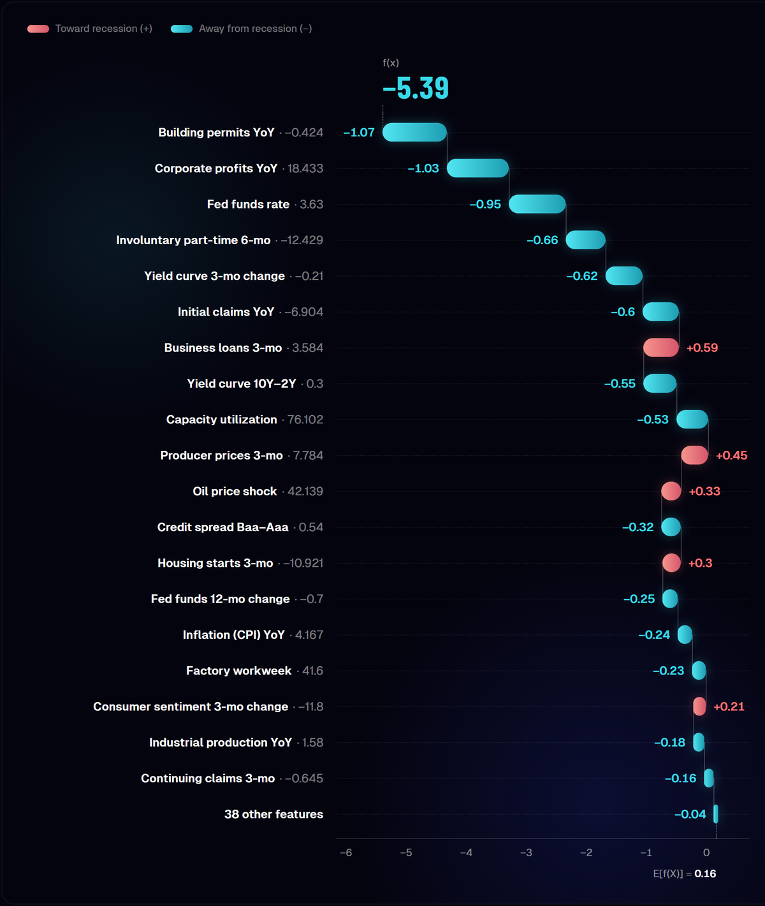

03 — 2026
Recession Probability Engine
Updated publicly every month. The paper — validation, results and charts — is on GitHub.
Forecasting a recession is a learning problem with very few positive examples and endless opportunities to fool yourself. I spent several months building a model that estimates the probability of a US recession from public macro data — and most of that time did not go into making the model more complex, but into making it honest.

The problem, in its real form
Forecasting recessions is hard for four reasons that interact in unpleasant ways.
- Labels arrive late. The NBER, the body that officially dates US recessions, announces them retroactively — often six to twelve months after the fact. For recent months the ground truth is still being written.
- Events bleed forward. The model predicts twelve months ahead, so a sample from early 2019 carries the label "recession incoming" purely because COVID arrived in 2020 — not because of any learnable economic pattern in 2019.
- False positives destroy credibility. The cost of a false alarm is not just being wrong — it is that the next real alarm gets ignored.
- History is sparse. There have been roughly twelve US recessions since 1950. That is not a lot of positive examples to learn from.
Each of these required a deliberate design choice, and most of the work lives there — not in the algorithm.
The data
Public macroeconomic data from FRED, the St. Louis Fed's database, with history back to 1950: a few dozen indicators across the labour market, credit and financial conditions, real activity and prices, turned into monthly features.
Where a series did not yet exist — VIX before 1990, say — the value stays a proper missing. Not imputed, not zeroed. XGBoost handles missing values natively, and pretending a number existed is a quiet way of lying to the model.
The model, and why it is boring
Ten algorithms were evaluated — logistic regression, random forests, SVC, MLP, AdaBoost, naive Bayes and the gradient boosting family. Gradient boosting dominated consistently. Production today runs on XGBoost, a single model.
No neural networks, no elegant architectures. The signal in macro data is slow-moving and relatively smooth: decision trees capture it well, and they stay readable through SHAP. Most of the difficulty in this project sits around the model rather than inside it.
The four decisions that actually matter
1. An alarm that needs sustained evidence — the change that mattered most
The original version used a "confirmed" filter: the alarm only fires if probability stays above threshold for several consecutive months. It works, but it is path-blind: a gradual climb is treated exactly like a sudden spike.
Version 2 replaced it with a reading that weighs the whole recent path: a gradual build-up counts, and an isolated spike fades before it can raise an alarm. Above all, it recovered the 2001 recession — the one v1 missed. The 2001 build-up had month-to-month variability that kept resetting the consecutive-month counter; the new reading accumulates it instead.
Why 2001 was so awkward deserves its own paragraph. It was not a collapse in household demand but a localised contraction on the corporate side: no housing crash, no systemic banking crisis. Its markers — high-yield spreads, bank lending standards, capital expenditure intent — are series that begin in the 1990s. In the validation fold that tests 2001, the model trains only on data up to the early 1990s: those features had seen zero recessions. The model ignored them, correctly.
2. Publication-lag alignment
This is the boring part that decides whether a macro model is real or fiction. FRED series are indexed by reference period, not by release date: March's figure sits in the archive dated March, but in the real world it appears later.
The original code snapped everything to the end of the reference period — that is, handed the model data before it existed. That is lookahead leakage, and it is invisible: the model simply looks better. Fixing it moved AUC by all of +0.008. I did it anyway, because that number is not the point — a model that cheats with time is worthless even when it cheats only a little.
3. Only settled labels, and COVID kept out
The NBER revises its dates, and a month labelled "no recession" today can become "recession" next year; and a twelve-month outcome is only known twelve months later. So the model never trains on a label that is not settled yet. The live model has seen no data after January 2019: everything it has published since is genuinely out of sample.
The pandemic months are kept out of training. Early-2019 samples carry a positive label only because of COVID, and there was no learnable economic deterioration in 2019 that preceded it; a pandemic is an exogenous shock, not a business cycle: the model should not learn to detect pandemics.
4. Expanding walk-forward validation
Standard cross-validation is wrong for time series: training on fold 3 and testing on fold 1 means using the future to predict the past. Here each fold trains on all history up to a point and tests on everything that follows, adding one historical recession at a time. It is exactly how the model would actually be used: you only ever know what happened before today.
Every feature had to earn its place
Before freezing the production set, every feature went through ablation tests, and every candidate new feature had to improve the walk-forward results to get in. Most did not: they hurt AUC, raised the false-positive rate, or both, and they stay out.
Removing features that looked weak made validation worse, too. The ablation score captures marginal effects, and feature interactions matter more than the score suggests.
No black boxes
Every monthly prediction comes with a SHAP decomposition in three forms: a summary of overall feature importance, a timeline showing which factors drove the signal in each historical period, and a waterfall that opens a single month and shows exactly what the model saw.
It does two things. It keeps the model honest — if the alarm is firing because of a single obscure feature, that is visible. And it connects the output to economic intuition: asked "why does the model think a recession is likely now?", you can give a real answer.

The June 2026 reading is a good example. The model prints 1.3% — a fourth consecutive monthly decline from February's 3.7% peak. Underneath that number:
- Holding risk down: building permits back to flat after −8.6%, corporate profits at +18.4% year on year, jobless claims at −6.9%, involuntary part-time work down 12.4% over six months.
- Pushing it up: an oil price shock, producer prices at +7.8% over three months, housing starts flipping from a positive anchor to a −10.9% drag.
The interesting nuance — and the reason the decomposition matters more than the number — is that labour strength is coexisting with an unusually low participation rate. The workforce buffer is narrower than headline claims alone suggest. The model is right to price risk low today; the real question is what happens if those anchors give.
What it is not
It is not a trading system. It is not tested in any way that accounts for transaction costs, slippage, or the fact that markets often price a recession before it is confirmed. It does not forecast GDP, it does not forecast unemployment, and it says nothing about how deep or how long.
It produces a probability that economic conditions over the next twelve months will include a broad contraction, subsequently recognised as such by the NBER. That is a narrower, more precise claim — and one that can be evaluated historically with clear right or wrong answers.
On false alarms it is worth being precise. Across the modern folds, excluding the COVID window, the only above-threshold episodes lasted one or two months and peaked at 58.5%, concentrated in the 2006 housing stress and the 2022–2023 rate-hike cycle. No sustained alarm was ever issued without a recession following.
Technical summary
- Data
- Public FRED data, 1950–present; each input used only once it is published
- Target
- NBER recession beginning within 12 months (monthly probability)
- Model
- XGBoost — chosen from 10 algorithms
- Signal
- A monthly reading that needs sustained evidence; alarm at 50%
- Validation
- Expanding walk-forward, one test period per recession; no label used before its outcome is known
- Exclusions
- The pandemic months, kept out of training and scoring
- Explainability
- SHAP — summary, timeline, waterfall — for every month
- Cadence
- Monthly public update
What it taught me
That in macro modelling, pipeline architecture matters more than algorithm choice. The biggest jump did not come from a new model. And the correction I am proudest of — aligning to publication dates — improved the metrics by almost nothing.
Publishing a reading every month, with the reasoning attached, also keeps me honest. Once a call is public you cannot quietly revise it.
The paper, with fold-by-fold validation and the charts, is public: github.com/neirottimatteo/research-and-whitepapers.